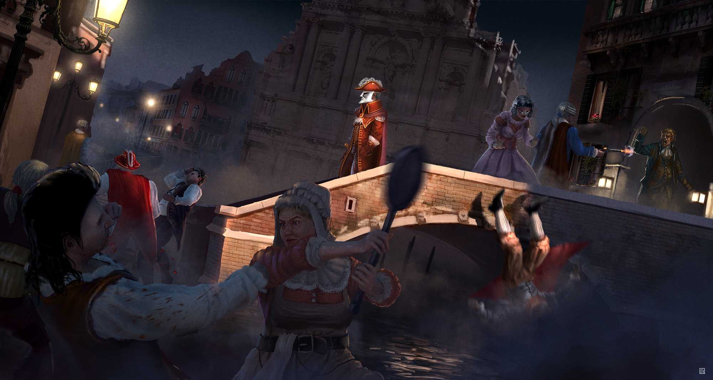

Though it boasts to be one of the oldest republics in the world, Venice and its empire is nevertheless organised and run for the most part to the benefit of a very small portion of its inhabitants. Its laws, traditions and history have been shaped by the needs and demands of the Patrician families that rule the city through the Doge’s government. It may not have a king or queen, but La Serenissima is arranged no less for the benefit of the aristocratic few than the monarchies of Europe.

THe Patricians, Aristocracy of Venice.
The power of the ruling classes has been under threat for a while, not just wihin Venice, but throughout Europe as the merchantile and artisan classes gain wealth and land. Many rish families of Venice, ones who had always had power and position, were shrunk to almost nothing by Venices poor economy. As trade and ship building dwindled to nothing in Venice, these families got smaller and smaller, many losing everything. High society became even more insular, rather prop up rivals and neighbours, then let the entire system, a system they relied on, to collapse.
The french revolution gave power to the peasant population of Europe, and throughout Europe, the upper class was exectuted and destroyed. Venetian aristocracy was partly spared this fate since public opinion of them had dwindled so low that they werent seen as the power they once were, and so many had gone abroard to seek new fortune. When the rent opened Venice was spared much of the destruction and devasatation that affected other cities. Though there was much chaos, the aristocracy was far from wiped out.
Once the world started to calm down after the affects of the Rents opening, Venice was primed to grow, the docks saw an massive influx of trade, ships were built at a fast rate and Venice grew and grew. The money started to go back to the Aristocracy, this time however, the Patricians city-wide had learned from their time of struggle, and they must not let it happen again. They hoarded their wealth, kept the divide between rish and poor as wide as possible, lest the poor have a chance to rise up once again.
The Patricians now live lives of decadance, the Carnevale forever ongoing. Nobles hold parties that last days, parties where nothing is off limits. Orgies, cannibilism, extravegant feats and of course, violence in the streets are a common occurence. Caught in an ongoing addiction to power over others, the Patricians care nothing for the peasentry, seeing them as sport to be hunted at best. Sexual deviance and acts considered depreaved in any other society are rife, violence a nightly occurence, death a celebration.
Every night these Masqurettas take to the streets, spreading violence and bloodshed. Noble familes with little money left, give their votes away to the highest bidder so they can cling on to power and wealth. Nicknamed the Barnobottis they join in the Masqurettas with as much blood filled pleasure as any noble. Foreign Nobles come to join in these wild parties. The City Guard, now nothing more than a collection of thugs, paid off to turn a blind eye, or worse, join in. No peasant is safe once the Masquretta is in full swing, the Patricians will have their party.
Play Style
With very powerful leaders and heroes the Patricians have access to some of the most powerful characters in the game. A good range of weapons, ranged and close combat, good stat lines, lots of buffs through various abilities the Patricians are few in number but very powerful. Even the henchmen of the Patricians can hold their own against some other factions heroes.